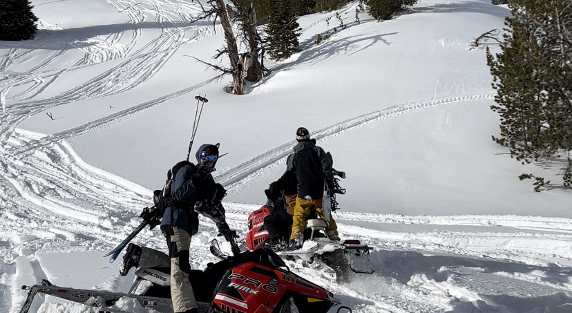
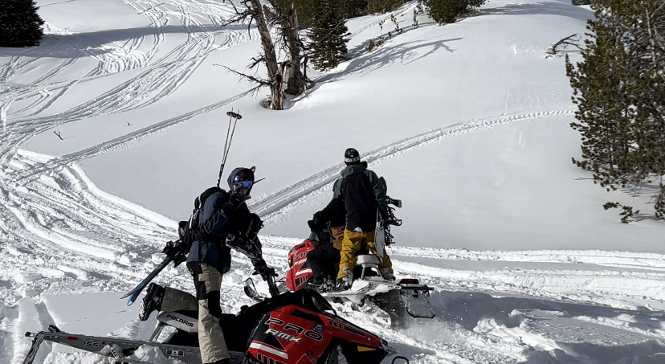

About Me
My Story
My name is Henry Berezay, and I was born and raised in Jackson Hole, Wyoming. Jackson sits next to Grand Teton and Yellowstone National Parks, areas known for their natural beauty and incredible outdoor recreation. I have spent most of my life in Wyoming, and after graduating from Jackson Hole High School, I attended the University of Wyoming for a year. I then served a two-year mission for The Church of Jesus Christ of Latter-day Saints in West Texas. After returning from my mission, I transferred to BYU, where I am currently studying.
Things I love
- Hobbies
- Riding dirt bikes in the mountains with my friends
- Skiing
- Fishing, especially fly fishing
- Going on adventures and being outside
- Exploring new places
- Food
- Curry
- Any type of Meat
- Mexican food, especially tacos
- Ice cream
 
